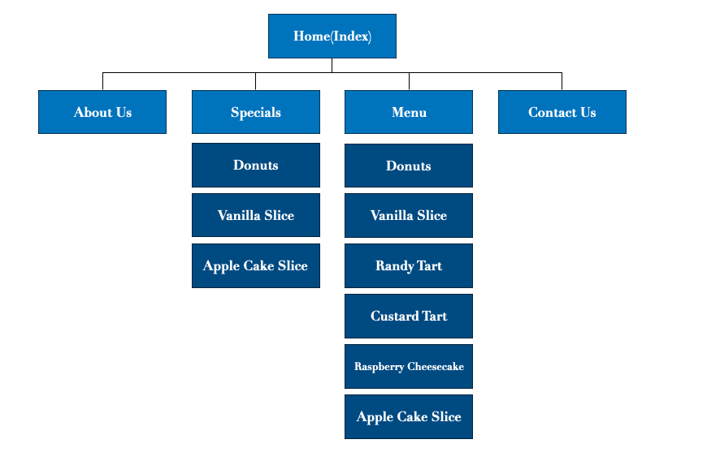

The website aims to improve our business by getting on the Internet and intended to attract young families and young people, possibly around the age of 17-35, to our bakery.
Other advertising will be consistent for a period of 3 months (except for including the new web site), so that any increase in sales should be attributable to the site. At the end of this 3 month period (and during), the number of new customers will be counted and compared to the previous 3 months.
Local residents, age 17-35 in Kirwan, Queensland.

 >
>

shows product img and sales price

With img links to each page


#d2dbe2
#d4cfc8
#ccb491
#4b2f18
Fredericka the Great: for home page
Voltaire: main text
Roboto: footer
Very Unsatisfied -3 -2 -1 0 1 2 3 Very Satisfied
1.Getting to the right part of the site : 3
2.Quality of information about individual products : 1
commnet: need to add more information other than price
3.Ease of reading the text: 3
4.Apperance of site, including colors and graphics: 2
commnet: nice colors and graphics but maybe too big for the menu ->cannot view all menu easily because need to scroll
5.Speed of pages displaying:3
6.Fun,entertainment value : 1
commnet: no entertaining texts, sliders or dynamic interactions
1.Getting to the right part of the site : 3
2.Quality of information about individual products : 2
commnet: more detail on products
3.Ease of reading the text: 3
4.Apperance of site, including colors and graphics: 3
5.Speed of pages displaying:2
commnet: the size of pic may need to reduce cos some of the content load a bit slow
6.Fun,entertainment value :3
1.Getting to the right part of the site : 3
2.Quality of information about individual products : 1
3.Ease of reading the text: 2
4.Apperance of site, including colors and graphics: 2
5.Speed of pages displaying:2
6.Fun,entertainment value :3
1.Getting to the right part of the site : 2
2.Quality of information about individual products : 1
commnet: its a bit weird that the individual page has discount and the specials page has discount again (unless I saw wrong), individual pages probably need some words inside
3.Ease of reading the text: 2
commnet: text is quite easy to read although some places white text on light brown background is a little bit hard to see
4.Apperance of site, including colors and graphics: 3
5.Speed of pages displaying:3
6.Fun,entertainment value :2